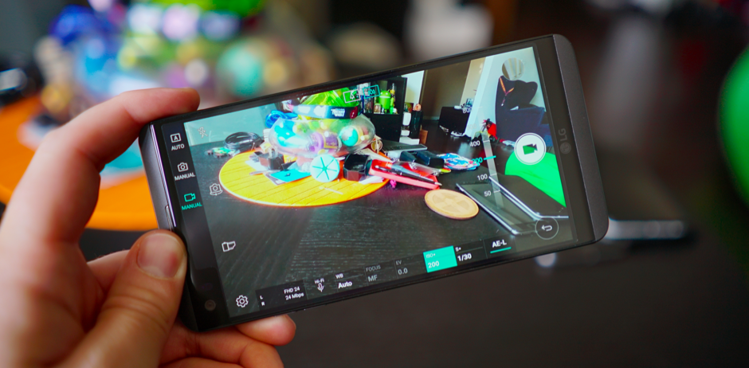
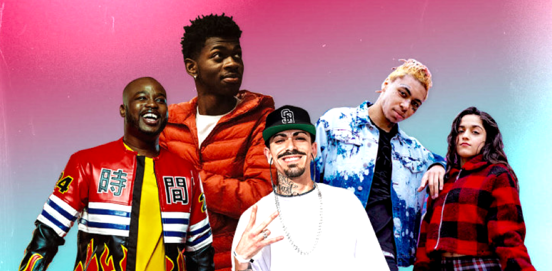

Hey, I’m Aman, a User Researcher
based in NYC.
based in NYC.
For the past 5+ years I've lead qual + quant research for clients such as Apple, LG, Tencent, Nike, and Blue Apron to name a few.
↳ Email
↳ Resume
↳ LinkedIn
↳ Resume
CASE STUDIES

MIXED METHODS RESEARCH
Establishing a product research
framework for LG Mobile
framework for LG Mobile
(Survey, Social Listening, Secondary Research, Focus Groups)

QUANTITATIVE RESEARCH
Investigating subscription retention
for Blue Apron
for Blue Apron
(Audience Segmentation, Brand-Passion Indexing, +3 more)

GENERATIVE RESEARCH
Foundational research to develop a
new A&R-focussed product for Triller
new A&R-focussed product for Triller
(Interviews, Journey Map, Usability, Competitive Analysis, Codesign)
AUDIENCE RESEARCH, BRAND STRATEGY
Using audience analysis to develop
brand strategy for Big Sean
brand strategy for Big Sean
(Audience Segmentation, Survey, Creative Rollout Strategy, +2 more)